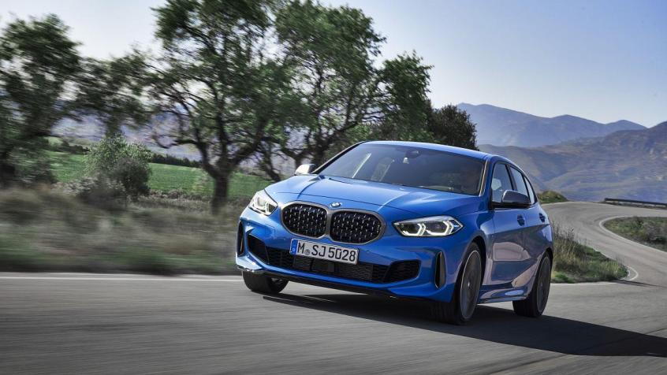
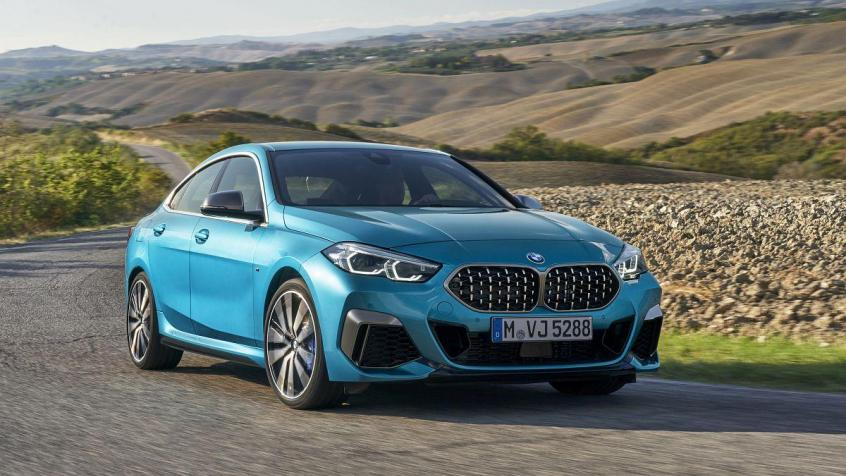
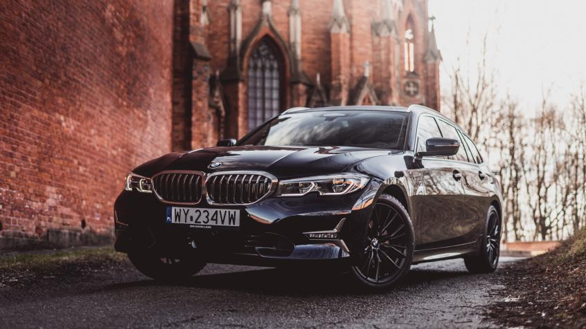
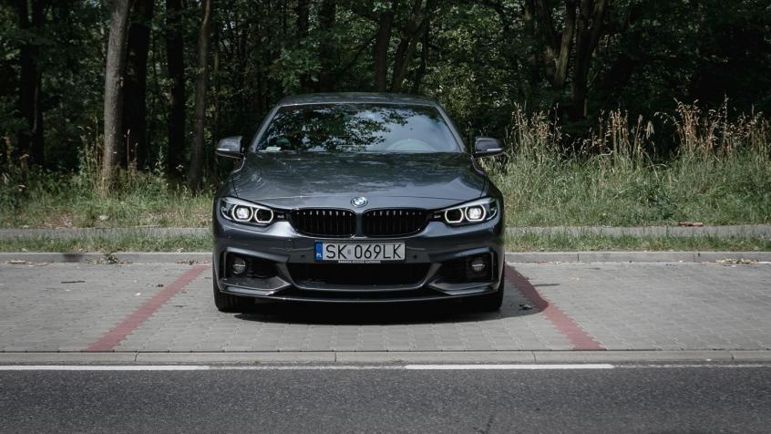
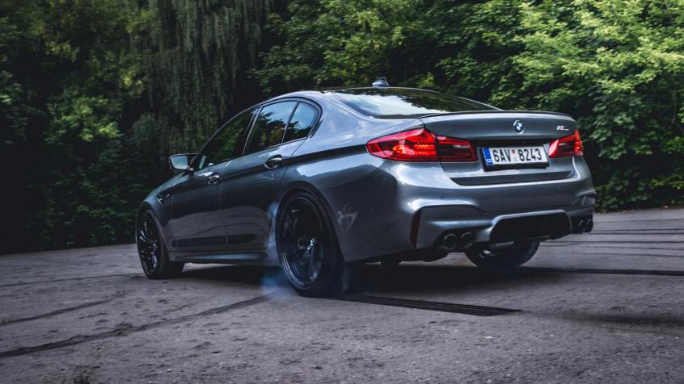
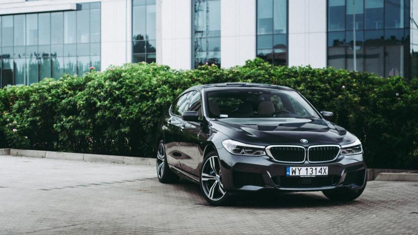
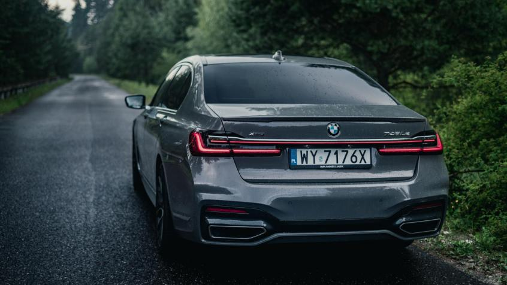
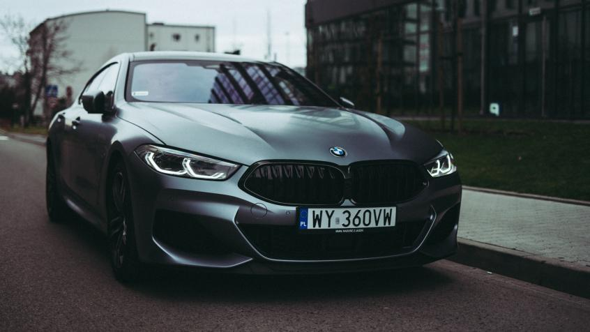

BMW seria 1
Kompaktowy model należący do niższej klasy średniej (segment C), klasyfikowany w grupie premium, produkowany od 2004 roku. Pierwszy samochód BMW w tym segmencie i najmniejsze auto marki od czasów modelu 700 z przełomu lat 50. i 60. Technicznie spokrewniony z BMW Serii 3. „Jedynka” debiutowała jako pięciodrzwiowy hatchback, od 2007 roku dostępny również w wersjach coupe oraz kabriolet. Model szybko osiągnął rynkowy sukces – dziś jest drugim najpopularniejszym autem BMW, który wyprodukowano już w liczbie ponad miliona egzemplarzy. Od 2011 roku dostępna jest druga generacja modelu.
BMW seria 2
Kompaktowy model (segment C; grupa premium) o kilku wersjach nadwoziowych, produkowany od 2013 roku. Wprowadzenie na rynek Serii 2 było związane z uporządkowaniem nazewnictwa aut marki. Pierwszym samochodem oznaczonym tą nazwą było coupe wprowadzone do oferty BMW. W miejsce BMW Serii 1 Coupe (typ E82). Tuż po nim pojawiła Seria 2 Cabrio, również zastępująca analogiczny model Serii 1 (typ E88). Trzeci w gamie „Dwójki” jest van, w dwóch wersjach: mniejszej – Active Tourer oraz większej, z trzecim rzędem siedzeń – Gran Tourer.
BMW seria 3
Model należący do klasy średniej (segment D) produkowany od 1975 roku. W ofercie BMW Seria 3 zastąpiła model 2002. To najpopularniejszy samochód BMW w historii i najlepiej sprzedające się auto wśród luksusowych marek w Europie. Przez ponad 30 lat znalazł on ponad 12 milionów nabywców, a także zdobył szereg nagród i wyróżnień (w tym tytuł Światowego Samochodu Roku 2006 i 20 razy z rzędu miejsce w czołowej 10 najlepszych aut roku wg „Car and Driver”). Obecnie na rynku dostępna jest szósta generacja modelu (od 2012 roku).
BMW seria 4
Sportowe coupe klasy średniej (segment D) produkowane od 2013 roku. Model, którego zapowiedzią była prezentacja prototypu o nazwie Concept 4 Series Coupe, został wprowadzony do oferty marki jako zastępstwo dla Serii 3 Coupe (E92). W przeciwieństwie do swojego poprzednika, Seria 4 jest samodzielnym modelem, a nie tylko dwudrzwiową wersją Serii 3. Oba samochody łączy jednak wiele rozwiązań konstrukcyjnych i technologicznych, np. zbudowano je na tej samej platformie podłogowej (F30). Seria 4 dostępna jest również w wersji cabrio. Jej topową wersją jest model M4.
BMW seria 5
Model wyższej klasy średniej (segment E), klasyfikowany w grupie premium, produkowany od 1972 roku. Jeden z najpopularniejszych samochodów w swoim segmencie, wielokrotnie nagradzany, sprzedany w liczbie prawie 8 milionów egzemplarzy. Pierwszy model BMW o takim nazewnictwie, następca tzw. „Nowej Klasy” (seria E115). Początkowo dostępny tylko w wersji sedan; od 1991 roku roku również w odmianie kombi (Touring), a w latach 2009-2017 także w wersji fastback (Gran Turismo). Od 1985 roku model dostępny również w sportowej odmianie M5. Od 2017 roku na rynku dostępna jest szósta generacja Serii 5.
BMW seria 6
Luksusowy samochód sportowy o nadwoziu coupe (segment G) produkowany w latach 1976- 1989 oraz ponownie od 2003 roku. Pierwsza generacja debiutowała jako następstwo dla modeli CS i CSL (typ E9). Samochód zaprojektowany przez Paula Bracqa do dziś imponuje sylwetką – kiedyś jej nowoczesnością, dziś uniwersalnością i znakomitymi proporcjami. Po wyprodukowaniu prawie 90 tys. egzemplarzy, auto wycofano z rynku na rzecz modelu E31 (Seria 8), a potem reaktywowano po 14 latach. Do 2010 roku oferowano drugą generację modelu, którą w 2011 r. została zastąpiona przez generację nr 3 (F12/F13).
BMW seria 7
Luksusowa limuzyna klasyfikowana w topowym segmencie F, flagowy model BMW, produkowany od 1977 roku. Poprzednikiem Serii 7 był model E3. Spokrewniona technicznie z nim była zresztą pierwsza generacja „siódemki”. Samochód okazał się komercyjnym sukcesem, nie tylko w Europie, ale i w USA – wyprodukowano go w liczbie prawie 300 tys. egzemplarzy. Kolejne ugruntowały pozycję BMW w tym segmencie. Seria 7 jest dla niemieckiej marki modelem, który jako pierwszy prezentuje jej nowe rozwiązania techniczne – później są one wykorzystywane w mniejszych autach BMW. Od 2015 roku oferowana jest szósta generacja modelu, nazwana G11 oraz G12 (wersja przedłużona).
BMW seria 8
Powrót do serii ósmej po dwudziestu latach nieobecności na rynku oznacza koniec serii szóstej. Eleganckie coupe pozwoli zatopić się w luksusie, ale zagwarantuje również sportowe doznania - cyfra „8” odnosi się do sportowych modeli marki, Z8 oraz i8.
To auto miałem
Kompaktowy model należący do niższej klasy średniej (segment C), klasyfikowany w grupie premium, produkowany od 2004 roku. Pierwszy samochód BMW w tym segmencie i najmniejsze auto marki od czasów modelu 700 z przełomu lat 50. i 60. Technicznie spokrewniony z BMW Serii 3. „Jedynka” debiutowała jako pięciodrzwiowy hatchback, od 2007 roku dostępny również w wersjach coupe oraz kabriolet. Model szybko osiągnął rynkowy sukces – dziś jest drugim najpopularniejszym autem BMW, który wyprodukowano już w liczbie ponad miliona egzemplarzy. Od 2011 roku dostępna jest druga generacja modelu.